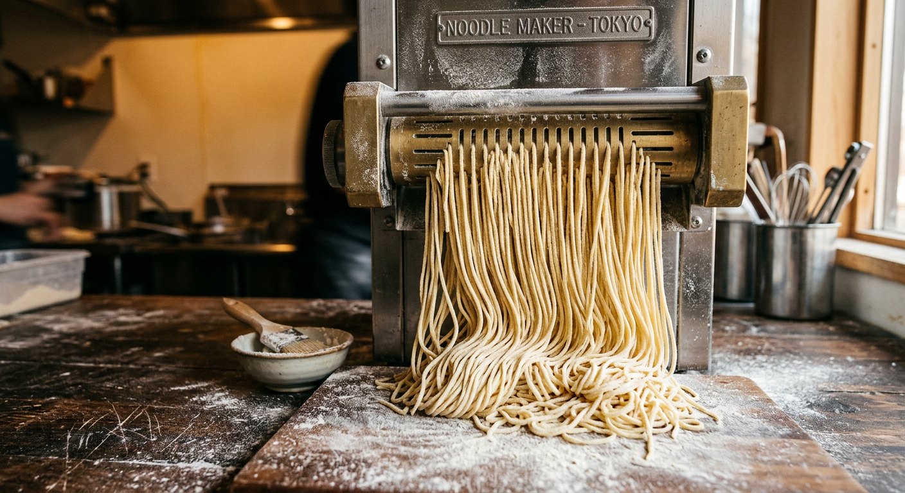

和歌堂 — Beltline, Calgary
House noodles, rich broth, and a Mala Tonkotsu that numbs your tongue and keeps going. Fresh noodles cook differently. Bouncier, more texture, gone by close.
The Menu
No full menu here. Just the bowls people keep coming back for.

The Noodles
The noodle machine runs twice daily — you can watch it from the dining room. Fresh noodles hold their texture in the broth. Dried ones don't.
"House-made noodles! They are made fresh by the chef twice per day and they are so much better than anything I've had."
— Joel · Google Review · 5 Stars
What People Say
"One of the best ramen experiences I've had in YYC. Traditional Japanese ramen is all about craftsmanship — the chef mastering the broth and noodles through years of dedication. You can really see that here."
"Wakado is the BEST place for ramen in Calgary. Most consistent, authentic, delicious, and fresh. Their noodles are the perfect texture, thickness, and length."